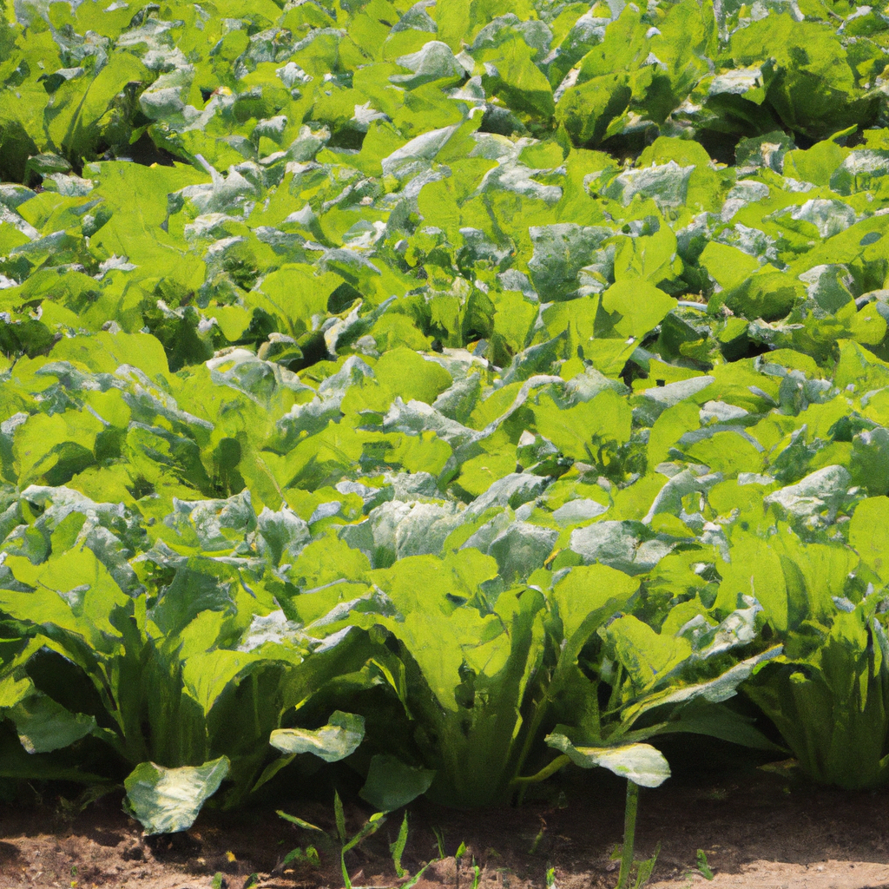

Mustard Greens
Today, I want to share with you a wonderful vegetable that can be found in most gardens: mustard greens. Mustard greens are a leafy green vegetable that is packed with essential vitamins and minerals. They have a unique flavor that adds a delicious touch to any recipe. They are also a good source of dietary fiber and antioxidants, making them an excellent choice for healthy eating.
Mustard greens are easy to grow and can be harvested from late spring to early fall. When growing mustard greens, you should provide them with plenty of sunlight and water. You can also add some organic compost to the soil to give the plants an extra boost of nutrition.
When it comes to cooking with mustard greens, there are many recipes to choose from. You can use them in salads, soups, stews, and even stir-frys. They are also a great addition to sandwiches and wraps.
If you want to get the most out of your mustard greens, you should cook them properly. If you overcook them, they will lose their vibrant color and flavor. The best way to cook them is to steam them for just a few minutes until they are tender.
Mustard greens are a great way to get your daily dose of essential vitamins and minerals. They are also a great addition to any meal and can help to add flavor and nutrition to your dishes. So, if you haven’t tried mustard greens yet, it’s time to give them a try!